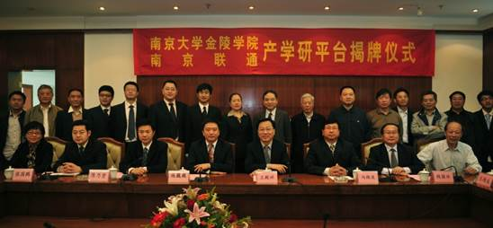
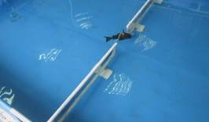
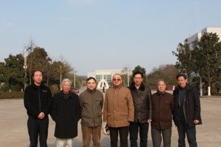
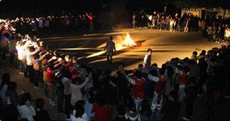

信息科学与工程学院
2011年度工作十大亮点
1、南京大学金陵学院与中国联通南京分公司共建的“现代通信技术实验室”正式竣工
由南京大学金陵学院与中国联通南京分公司共同投资1600余万元设备的“现代通信技术实验室”正式竣工，并于10月举行了隆重的挂牌仪式。此一集先进性、创新性、开放性于一体的现代通信技术实验室顺利建成，成为最新通信技术的展示平台和实用通信人才的培养基地，为我院产学研平台发展奠定了坚实的基础。

2、信息科学与工程学院与北京大学合作研发的机器鱼“金陵一号”诞生
青年教师在完成繁重的教学任务同时，开展科研项目工作，2011年9月信工学院与北大合作研发的机器鱼“金陵一号”诞生。

3、2011年信工学院教学工作与教学研究、学生科技竞赛、对外合作交流成果丰硕
（1）在兰州举行的2011全国机器人大赛上，我院荣获2项冠军、4项亚军、2项一等奖、7项二等奖、4项三等奖；省级大学生机器人大赛荣获季军。
（2）由我院青年教师为主担任教学任务的全省计算机一级考试合格率位居全省高校第五（去年第十）；
（3）2011届毕业生校级优秀毕业论文有7篇入选，2篇团队论文入选，其中2篇个人、2篇团队入选省级优秀论文评比；
（4）申请省级专利1项；
（5）在正式刊物上学生发表论文4篇；教师发表论文10篇；出版教材2本；
（6）与英国Sussex大学（英国综合排名14）合作“0.5+1”免考研究生项目正式开展，已有6人录取；
（7）由我院培养的在英国学习的国际合作班学生（“2+2”项目）已完成学业，90%继续深造读研，其中不乏被世界一流学府（帝国理工、DCL、南安普顿大学等）录取；
（8）与加拿大罗里尔大学签订了合作交流协议。首项合作项目是编译教材：由加拿大吴宗森教授、特里尔教授与我院八位教授合作的电子、通信及物理英汉实验丛书六册正在编译中，有望2012年年底完成；
4、信息管理专业科研取得重大成果
我院信息管理与技术专业主任朱庆华教授主持的国家社科基金项目成果——“网络信息资源评价指标体系的建立和测定”入选2011年《国家哲学社会科学成果文库》，此成果文库入选的项目均具有重要的理论意义和实践价值，体现了较强的创新性和前沿性，学风严谨、文风朴实，反映了当前我国哲学社会科学研究相关领域的领先水平。
5、信息科学与工程学院成立，顺利完成新老主任交替

6、信息科学与工程学院设立服务外包人才培养基地
我院计算机科学与技术专业申请的服务外包人才培养试点基地由省教育厅省商业厅正式批准成立，这是金陵学院第一个服务外包人才培养基地，12.5万元的基地建设经费已经到校。
7、优秀人才引进有所突破，教师队伍建设稳固前进
本学期引进了通信工程专家何菁博士专职担任我院通信工程专业主任，何菁博士1985年毕业于南京大学，1995年获博士学位，历任通标标准技术服务(上海)有限公司无线通讯实验室总经理；嘉盈科技(上海)有限公司总经理及技术总监等职。如此丰富的专业从业经历为我院教师队伍的优化起到了重要作用。
青年教师的培养也是我院的重要工作之一，本年度我院五位教师符合讲师资格并已申报，戴瑾、陈沿明被聘为系主任助理，夏庆锋、俞海聘为实验室副主任，本年度我院两位教职员工通过评审获得了金陵学院奖励晋级的荣誉。
8、名家讲座纷呈，学生学术交流活跃
我院今年分别邀请了北航专家梁建宏博士、北大工学院力学与空天技术系副教授谢广明博士、加拿大罗里尔大学电子计算机学系吴宗森教授、南京大学信管系教授颜翔林博士、东软集团人力资源部主管赵爽、通信专业主任何菁博士、南京大学声学研究所副所长沈勇教授等专家为我院师生作学术报告，受到了热烈欢迎。
9、我院注重活跃校园文化，丰富学生生活，成功举办学生大型迎新篝火晚会

10、创先争优深入开展，总支工会工作开展富有朝气
（1）搞共建、做奉献——在党支部共建活动中做出特色
2011年4月，教工党支部与浦口高新区南京实验国际学校党支部，就两党支部的共建活动达成了初步协议，利用我院的资源，向中小学生进行科普教育，为我国科学的春天培养接班人尽党支部一份微薄之力。上半年在南京实验国际学校开展了机器人表演和许多有趣的物理演示实验，受到了该校师生的欢迎。下半年共建活动继续深入开展，教工支部组织部分党员教师，免费给该校学生开办机器人、电子和物理三个课外兴趣辅导班，为时一学期，共十六周，每周上二节课。该活动得到了南京实验国际学校广大师生的一致好评。
（2）信工院团总支与浦口区沿江街道团工委签署了《沿江街道青年志愿者实践基地协议》，使我院的青年志愿活动更加规范；
（3）重教学、定制度---规定党员教师全面听课。
信工院党总支高度重视教学工作，时刻不忘金陵学院以教学为主。所属教工支部开展党员听课活动，规定每个党员在必须做好自己教学工作的同时，每学期要在自己专业和非自己专业至少各听一次课，做好听课笔记，一方面学习其他教师的教学经验，另一方面对授课教师的教学进行评价,相互促进教学。该项活动的开展，对促进我院的教学效果是明显的，一种人人重视教学、个个研究教学的新风正在形成。相信只要党员走在前头，我们的各项工作都会开创出新的局面。
（4）各党支部在开展创先争优活动中各有自己的特色，如第一支部开展以“我是党员，我起表率”为主题的创先争优活动，第三支部开展“一名党员是一面旗帜”的活动，第五支部建立了学生“党员互助组”，规定党员互助组每周一到周四的下午4:00-6:00集中在一个教室给同学答疑，收到的效果很好，特别是考试期间来答疑的同学更多，这种互助新形式很值得提倡和推广。
（5）本学期组织总支工会组织组织部分教职工去盱眙考察乡镇企业，作社会调查。
本学期除了以上十项突出工作之外，还先后完成了：全院40位青年教职工绩效工资申报，青年教师中级职称考核申报，提前晋级教职工评选考核申报，四个专业学士学位申报材料的编写与支撑材料的收集整理，期中教学检查工作及汇报，2012年首届国际水中机器人公开赛筹备工作等。
南京大学金陵学院
信息科学与工程学院
2011-12-21